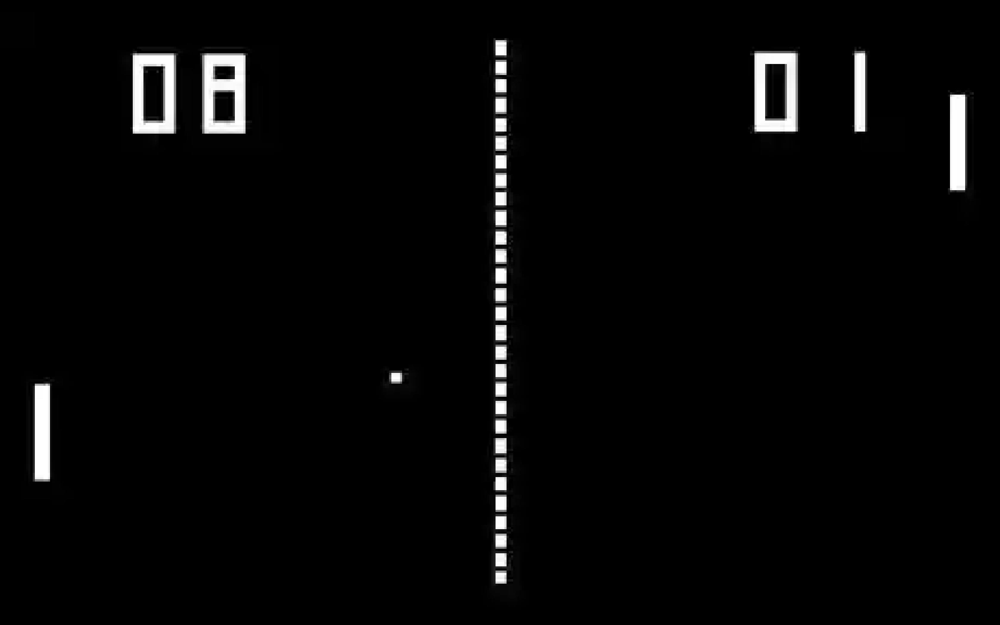

Our goal in this lab was to create pseudocode for an everyday task as well as a task that could be completed on a computer. We chose an Oil Change as our everyday task because we were instructed to choose a an activity that most people might not be familiar with. Pong was a simple game that we decided could be coded fairly easily, but included enough steps for us to write pseudocode for.
Our biggest issue was actually comprehending what the lab was asking us to do. We weren't sure if Task 1 was instructing us to make a list of high level tasks or to select one task and psuedocode it. We eventually understood the assignment and brainstormed our list. We then settled on an Oil Change as our everyday task.
Changing Oil 1. Drain oil a. Jack up Car b. Place oil catcher under drain plug c. Remove drain plug d. Allow to drain till empty e. Reinstall drain plug 2. Replace oil filter 3. Fill oil a. Add oil to cars specification b. Check oil level c. If too low add a little more d. Repeat steps b and c till at proper level 4. Reset oil maintenance light This is our task one. We felt that writing psuedocode for an Oil Change was both a useful skill to learn, but also was a task that most people would not be familiar with. The Psuedocode for pong is below. We tried to be as high-level, but also as thorough as possible when teaching how to create Pong.

// Make Pong Canvas/Background(Can be any Color You Want)
// Generate Two Paddles on Both Sides of the Screen
// Make Boundaries On the Top and Bottom of the Screen
// Generate a Ball in the middle of the Screen
// Accept User Input (Arrow Keys Pressed to Control Paddle)
// Move the Ball Around the Screen
// If the Ball Hits a Paddle, Bounce it back in the Other Direction
// If the Ball Leaves the Screen, Check Which Side it Left On
// Add a Point to Whoever Scored
// Check if Someone Reaches 7 Points, They Win